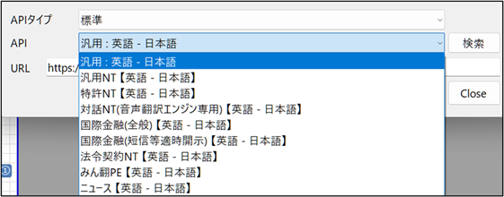
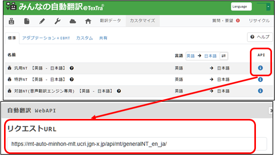

翻訳API設定
翻訳に使用するAPIを設定します。

通常は設定する必要はありません。
特定の翻訳APIを使いたい場合に設定してください。
① 利用できる翻訳APIを検索して表示します。

② みんなの自動翻訳の翻訳API一覧を開きます。（ログインが必要です。）
APIボタンで表示されるURLを本画面のURLに貼り付けると、
TexTraの翻訳で、対象の翻訳APIが使用できます。
サイト上で翻訳APIの追加、設定も行うことができます。
https://mt-auto-minhon-mlt.ucri.jgn-x.jp/content/mt/
